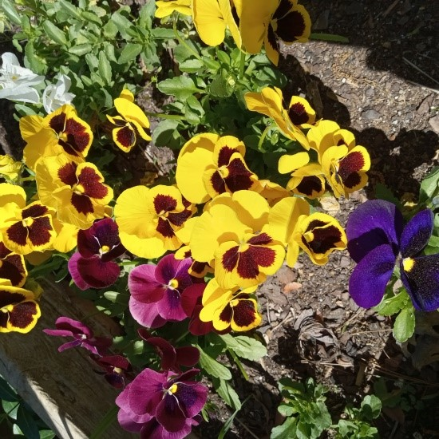
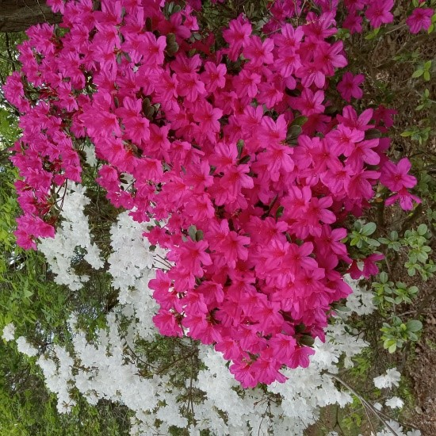
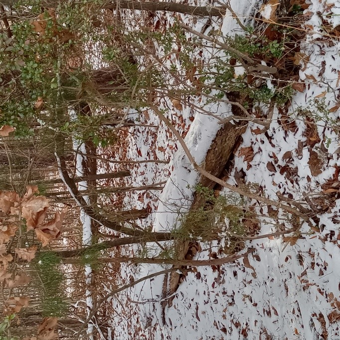

Loblolly Pine Bark
Featured on the Current Project page, accompanying the theme "Nature triggers memories."
See it on Current ProjectSuzanne photographs the same natural world she writes about. Below is a collection of images that appear throughout the site, shown here together, each one already paired with a piece of her writing.
Photographs of flowers and trees that accompany Suzanne's poetry collections and current project.
Featured on the Current Project page, accompanying the theme "Nature triggers memories."
See it on Current Project.PNG)
Featured on the Current Project page, accompanying the theme "A call to protect the natural world."
See it on Current Project


Suzanne's writing often begins with a sighting. These photographs accompany the poems and themes they inspired.

Featured on the Current Project page, accompanying the theme "Nature as beauty."
See it on Current ProjectSuzanne has supplied several more photographs. Each card below already points to a filename in assets/, save your photo under that exact name and it will appear automatically, replacing the "Image Pending" box. Three have already been assigned a page.









Browse selected poems and stories organized by form.
Visit the Writing pageSee Suzanne's four published books of poetry and prose.
Visit BooksHear Suzanne's readings and a community radio feature.
Visit Media